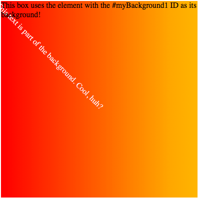
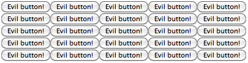

The element() CSS function defines an {{cssxref("<image>")}} value generated from an arbitrary HTML element. This image is live, meaning that if the HTML element is changed, the CSS properties using the resulting value are automatically updated.
A particularly useful scenario for using this would be to render an image in an HTML {{HTMLElement("canvas")}} element, then use that as a background.
On Gecko browsers, you can use the non-standard {{domxref("document.mozSetImageElement()")}} method to change the element being used as the background for a given CSS background element.
element(id)
where:
These examples can be viewed live in builds of Firefox that support -moz-element().
This example uses a hidden {{HTMLElement("div")}} as a background. The background element uses a gradient, but also includes text that is rendered as part of the background.
<div style="width:400px; height:400px; background:-moz-element(#myBackground1) no-repeat;"> <p>This box uses the element with the #myBackground1 ID as its background!</p> </div> <div style="overflow:hidden; height:0;"> <div id="myBackground1" style="width:1024px; height:1024px; background-image: linear-gradient(to right, red, orange, yellow, white);"> <p style="transform-origin:0 0; transform: rotate(45deg); color:white;">This text is part of the background. Cool, huh?</p> </div> </div>
The {{HTMLElement("div")}} element with the ID "myBackground1" is used as the background for the content including the paragraph "This box uses the element with the #myBackground1 ID as its background!".

This example uses a hidden {{HTMLElement("button")}} element in a repeating pattern as its background. This demonstrates that you can use arbitrary elements as background, but doesn't necessarily demonstrate good design practices.
<div style="width:400px; height:100px; background:-moz-element(#myBackground2);"> </div> <div style="overflow:hidden; height:0;"> <button id="myBackground2" type="button">Evil button!</button> </div>

| Specification | Status | Comment |
|---|---|---|
| {{SpecName('CSS4 Images', '#element-notation', 'Using Elements as Images: the element() notation')}} | {{Spec2('CSS4 Images')}} | Deferred from CSS3 Images. |
{{Compat}}